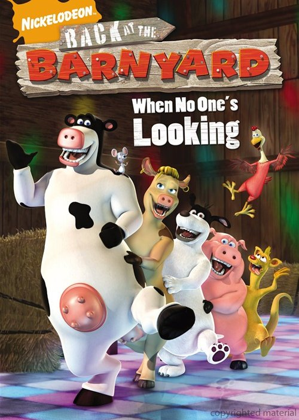

Filmes que explodiram minha cabeça
- INTERESTELAR
- Após ver a Terra consumindo boa parte de suas reservas naturais, um grupo de astronautas recebe a missão de verificar possíveis planetas para receberem a população mundial, possibilitando a continuação da espécie. Cooper é chamado para liderar o grupo e aceita a missão sabendo que pode nunca mais ver os filhos. Ao lado de Brand, Jenkins e Doyle, ele seguirá em busca de uma nova casa. Com o passar dos anos, sua filha Murph investirá numa própria jornada para também tentar salvar a população do planeta.
- O SEGREDO DOS ANIMAIS 
- Otis é um bezerro de bem com a vida, que vive em uma fazenda e adora dançar, cantar e se divertir pregando peças nos humanos. Ao contrário de seus pais, Ben e Miles, Otis não está preocupado em esconder dos humanos os talentos que os animais da fazenda possuem. Até ser colocado à prova, quando precisa demonstrar coragem e responsabilidade.
- COMO SE FOSSE A PRIMEIRA VEZ
- Em Como Se Fosse a Primeira Vez, Henry Roth (Adam Sandler) é um veterinário paquerador, que vive no Havaí e é famoso pelo grande número de turistas que conquista. Seu novo alvo é Lucy Whitmore (Drew Barrymore), que mora no local e por quem Henry se apaixona perdidamente. Porém há um problema: Lucy sofre de falta de memória de curto prazo, o que faz com que ela rapidamente se esqueça de fatos que acabaram de acontecer. Com isso Henry é obrigado a conquistá-la, dia após dia, para ficar ao seu lado.
- 500 DIAS COM ELA
- Tom Hansen (Joseph Gordon-Levitt) está em uma reunião com seu chefe, Vance (Clark Gregg), quando ele apresenta sua nova assistente, Summer Finn (Zooey Deschanel). Tom logo fica impressionado com sua beleza, o que faz com que tente, nas duas semanas seguintes, realizar algum tipo de contato. Sua grande chance surge quando seu melhor amigo o convida a ir em um karaokê, onde os colegas de trabalho costumam ir. Lá Tom encontra Summer. Eles também cantam e conversam sobre o amor, dando início a um relacionamento.
- AS FÉRIAS DE MR BEAN
- Numa tarde chuvosa na Inglaterra, Mr. Bean (Rowan Atkinson) ganha o 1º prêmio em uma rifa local: uma filmadora nova, 200 euros e uma semana de férias no sul da França. O período de sua viagem coincide com a realização do Festival de Cannes, um dos mais famosos festivais de cinema do mundo. Mr. Bean já está com a filmadora em punho quando embarca para Paris, sendo que, ao chegar a Gare de Lyons, pede a um passageiro para filmá-lo embarcando no trem. Este passageiro é o diretor russo Emil Duchesvsky (Karel Roden), que participará do júri do festival. Emil perde o trem, que parte com seu filho Stepan (Max Baldry), de apenas 10 anos. O garoto fica com Bean, que decide descer com ele na estação seguinte para esperar por Emil. Porém o diretor decide pegar um trem expresso para Cannes, onde denuncia Bean à polícia.
- O GRANDE DITADOR
- Adenoid Hynkel (Charles Chaplin) assume o governo de Tomainia. Ele acredita em uma nação puramente ariana e passa a discriminar os judeus locais. Esta situação é desconhecida por um barbeiro judeu (Charles Chaplin), que está hospitalizado devido à participação em uma batalha na 1ª Guerra Mundial. Ele recebe alta, mesmo sofrendo de amnésia sobre o que aconteceu na guerra. Por ser judeu, passa a ser perseguido e precisa viver no gueto. Lá conhece a lavadora Hannah (Paulette Goddard), por quem se apaixona. A vida dos judeus é monitorizada pela guarda de Hynkel, que tem planos de dominar o mundo. Seu próximo passo é invadir Osterlich, um país vizinho, e para tanto negocia um acordo com Benzino Napaloni (Jack Oakie), ditador da Bacteria.